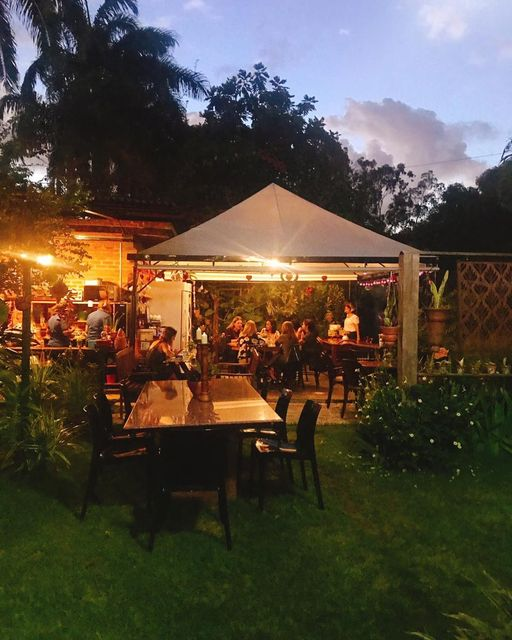

À Emporter
Tomar um café em um jardim com um belo pôr do sol, muda a química positivamente de qualquer cérebro, à emporter nos oferece um ambiente agradável, com ofertas de refeições de qualidade, tendo uma das melhores tortas de maçã da cidade.
|
|
||
|
|
||
À EmporterTomar um café em um jardim com um belo pôr do sol, muda a química positivamente de qualquer cérebro, à emporter nos oferece um ambiente agradável, com ofertas de refeições de qualidade, tendo uma das melhores tortas de maçã da cidade. |
 | |
| Desenvolvido por Milena Melo - 2023 | ||